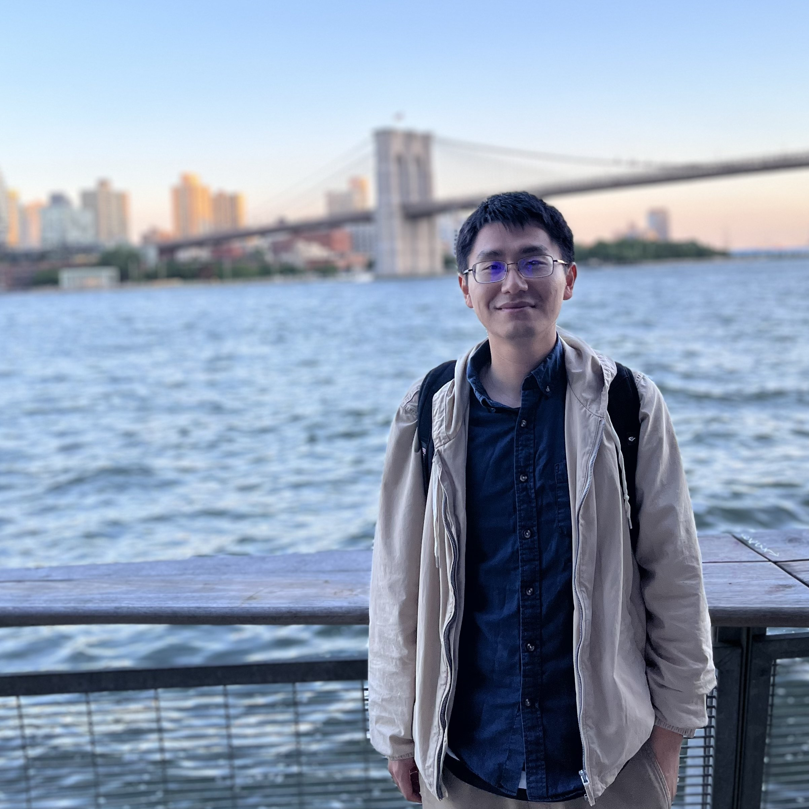
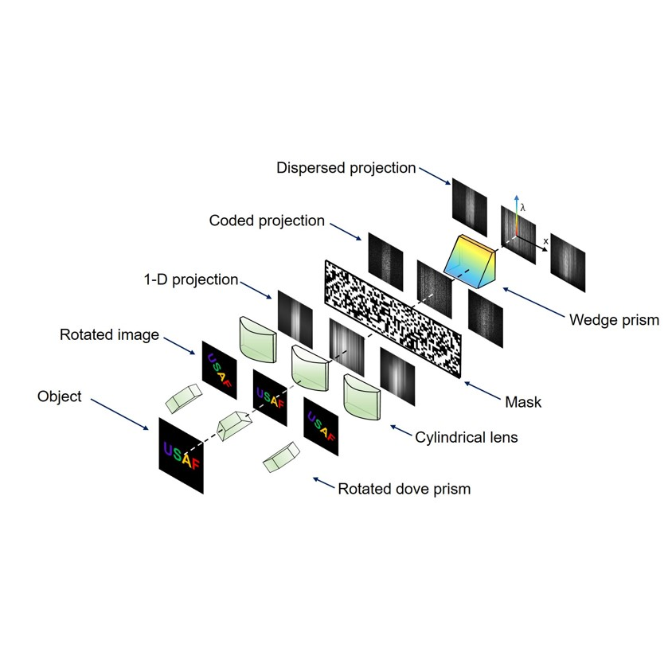
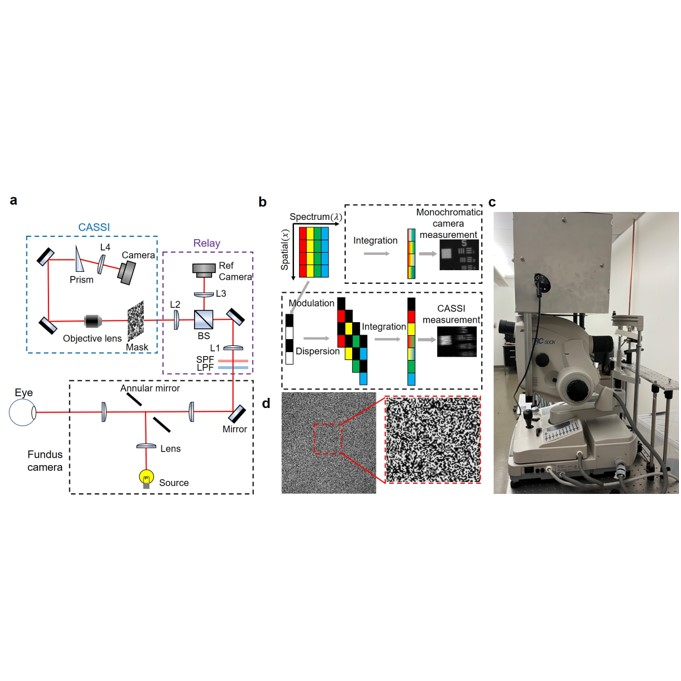
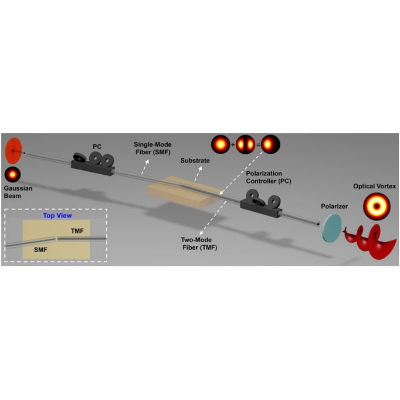

|
Ruixuan Zhao
I am a PhD student at ECE department at University of California, Los Angeles, supervised by professor Liang Gao. I received Master of Science in June 2021 in ECE at UCLA, where I worked in professor Mona Jarrahi 's lab. I received Bachelor of Engineering (BEng) degree in June 2019 at Huazhong Univerisity of Science and Technology, China.
My current research focuses on computational imaging, hyperspectral imaging and high speed 3D imaging+1.
Email /
Google Scholar /
Linkedin
|

|
News
01/2024 I am attending SPIE Pohtonics West 2024 and give a oral presentation of our recent hyperspectral imaging for retina imaging application. highlighted.
01/2023 Our work on coded aperture snapshot hyperspectral light field tomography has been published on Optics Express(editor pick/image of the week) highlighted.
01/2023 Our work on coded aperture snapshot fundus camera has been published on Scientific Report(editor pick/image of the week) highlighted.
01/2023 I am attending Pohtonics West 2023 and give a oral presentation of our recent hyperspectral imaging for retina imaging application. highlighted.
01/2024 I am attending Pohtonics West 2024 and give a oral presentation of our recent hyperspectral imaging for retina imaging application. highlighted.
|
Publications |
|

|
Coded aperture snapshot hyperspectral light field tomography
Ruixuan Zhao,
Qi Cui,
Zhaoqiang Wang,
Liang Gao
Optics Express, 2023
we developed a novel two-stage cascaded compressed sensing scheme. By appropriately distributing the computation load to each stage, this method utilizes the compressibility of natural scenes in multiple domains, reducing the ill-posed nature of datacube recovery and achieving enhanced spatial resolution, suppressed aliasing artifacts, and improved spectral fidelity. Our approach efficiently records a five-dimensional (5D) plenoptic function in a single snapshot.
|
|

|
Coded aperture snapshot spectral imaging fundus camera
Ruixuan Zhao,
Chengshuai Yang,
R. Theodore Smith,
Liang Gao
Scientific Reports, 2023
We demonstrated the performance of the system through various experiments, including imaging standard targets, utilizing an eye phantom, and conducting in vivo imaging of the human retina.
|
|

|
Generation of Orbital Angular Momentum Beam Using Fiber-to-Fiber Butt Coupling
Shuhui Li,
Zhe Xu,
Ruixuan Zhao,
Li Shen,
Cheng Du,
Jian Wang
IEEE Photonics Journal, 2018
We experimentally demonstrate a simple scheme for broadband generation of orbital angular momentum (OAM) using a fiber-based structure. A standard single-mode fiber (SMF) is stuck to a two-mode fiber (TMF) with specific offsets and tilt angles to realize high-order fiber mode conversion.
|
|
{kind=link}